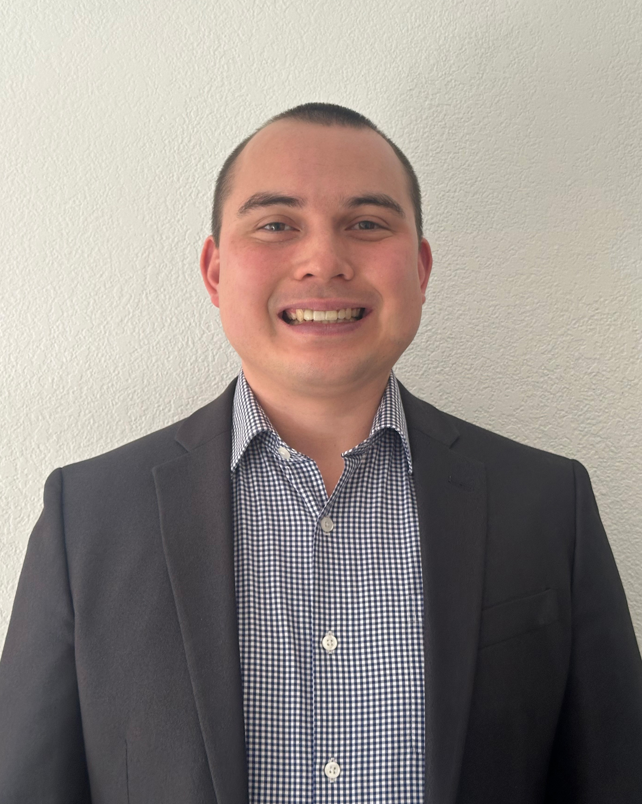

Joshua Lyles | WDD 130
Hello, my name is Joshua Lyles. I grew up by the ocean in Washington state, but now I'm living in Dallas, TX. Texas is very different from where I grew up- I miss the mountains, trees, lakes, and nature of my homeland! I served my mission in Aguascalientes, MX in 2012 and ended up marrying someone I met on my mission. We've been married 8 years now and are blessed to have a 3 year old son. We enjoy taking walks, biking, making pinatas, and visiting family- both in Mexico and Washington. I currently work for UPS in Sales, but I'm hoping that as I learn website design and programming I'll be able to switch to the Application Development department.